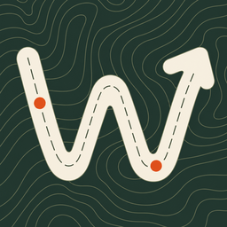

Walk more, every day.
Need a walk that fits the time you have? Wockett plans a loop from your door, sized to finish today's step goal or fit a spare 20 minutes, then guides you around it. Bring the dog: every pet gets their own daily goal.
Download on theApp StoreFree for iPhone, in the US and Canada.
Choose Finish Goal or 20, 30 or 45 minutes and Wockett suggests loops from where you stand, each with distance, time, estimated steps, weather and an elevation chart. Or pick a nearby park, beach or café and walk there and back.
Add your dogs (or a cat that walks) and choose who's coming. Each pet gets credit for the walk and a ring toward their own daily goal.
Named trails within 10 miles, nearest first, even with no signal. Get directions to the trail, and a nudge back if you wander off it. North Carolina for now, with more regions on the way.
One tracker for all four, with spoken updates, auto-pause, Lock Screen controls, and every walk, run and ride saved to Apple Health.
Today's steps from Apple Health, your pets' progress, your streak and the weather on one card, plus a home screen widget.
Keep a daily streak, collect badges, and join or create step challenges. No account to make: your walks stay on your iPhone and in your own iCloud.